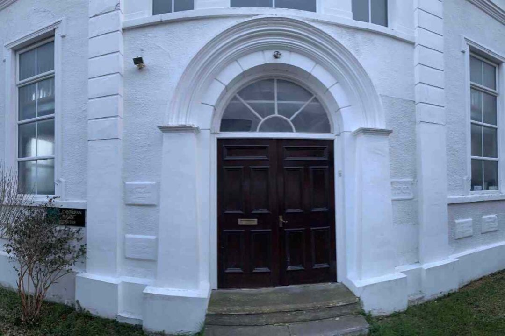
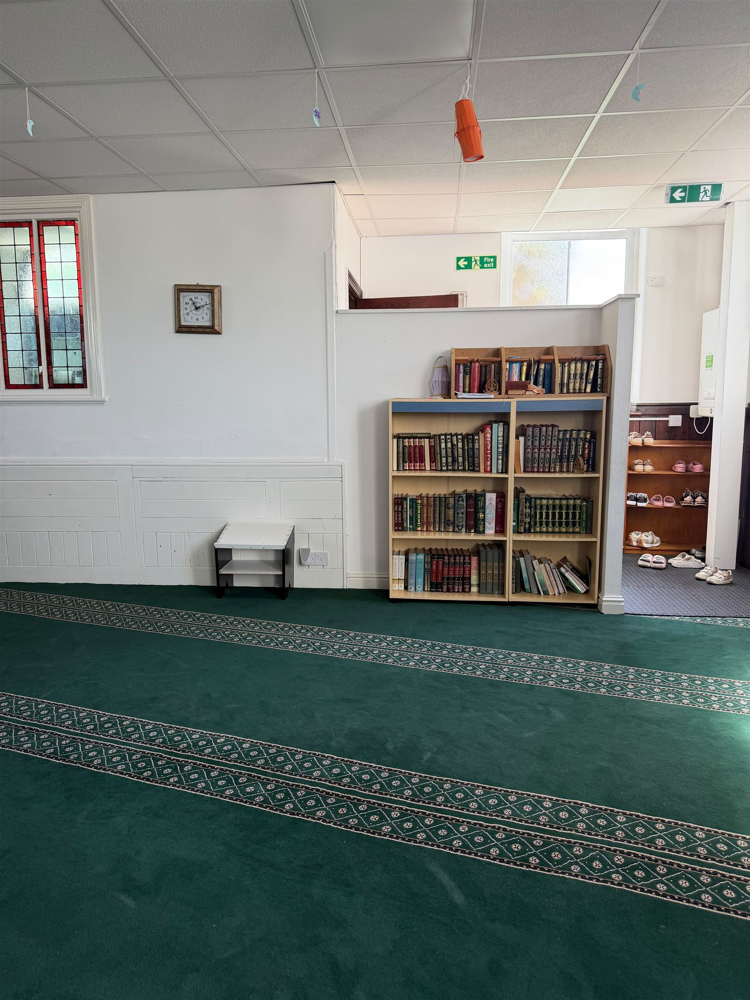

About Canolfan Iman Centre
Canolfan is the Welsh word for "centre" — and that is exactly what we aim to be: a spiritual, educational, and social centre for our community.
Rooted in North Wales
The Conwy Islamic Society was established in 1997 at the Canolfan Iman Centre on Glyn Y Marl Road, Llandudno Junction, and has played a crucial role ever since in fostering community and spiritual growth for local Muslims.
Local Muslims make significant contributions to the region's economy and social landscape — excelling in diverse fields such as catering, where they bring rich culinary traditions; retail, enhancing local shopping options; and healthcare, with many serving as dedicated doctors and nurses. Through various outreach initiatives, the society also aims to educate the broader community about Islamic values, fostering mutual respect and understanding.

Islam, in Britain and in Wales
Islam
Islam is one of the world's major religions, founded in the 7th century CE with the teachings of the Prophet Muhammad (PBUH), who is considered the final prophet in a long line of messengers. Central to Islam is the belief in one Allah (God), and its followers, known as Muslims, adhere to the Five Pillars: the declaration of faith (Shahada), prayer (Salah), fasting during the month of Ramadan (Sawm), charitable giving (Zakat), and pilgrimage to Mecca (Hajj). The Quran, regarded as the literal word of God, guides Muslims in all aspects of life. With over two billion adherents worldwide — over 25% of the world's population — Islam encompasses a rich diversity of cultures, traditions, and interpretations, emphasising values such as compassion, justice, and community.
Islam in the UK
Islam in the UK has a rich and diverse history, dating back to the early 19th century when the first significant Muslim communities began to form. Today it is one of the largest religions in the country, with millions of followers from South Asian, Middle Eastern, African, and many other backgrounds. The Muslim population contributes profoundly to British society across healthcare, education, business, and the arts. Mosques and Islamic centres across the UK serve not only as places of worship but also as cultural hubs that promote community engagement and interfaith dialogue. There are almost four million Muslims in the UK — about 6% of the population.
Islam in Wales
Islam in Wales has seen significant growth over the last few decades, with a vibrant Muslim community contributing to the cultural and social landscape of the region. The first substantial Muslim populations began to establish themselves in the late 19th and early 20th centuries, primarily sailors and traders. Today, Muslims in Wales come from diverse backgrounds, and Islamic centres and mosques — such as those in Cardiff, Swansea, Newport, and here in Llandudno Junction — serve as important hubs for worship, education, and community activities. There are an estimated 67,000 Muslims in Wales, making up just over 2% of the population.
Our Mission
"To serve our community through faith, education, compassion, and inclusion."
Faith
A welcoming space for the five daily prayers, Jumu'ah, and the major Islamic occasions.
Education
Qur'an, Arabic, and Islamic studies for children and adults alike.
Compassion
Zakat, Sadaqah, and food support for families who need a helping hand.
Inclusion
Open doors for every member of the local Muslim community and our wider neighbours.
A Centre for Every Stage of Life
Daily Worship
Five daily prayers, Jumu'ah, Taraweeh in Ramadan, and Eid celebrations — see our prayer times.
Community Support
Zakat and Sadaqah distribution, food drives, and a listening ear for anyone going through a hard time.
Interfaith Welcome
Open visits and conversations for schools, neighbours, and anyone curious about Islam and our community.
Funeral & Pastoral Support
We're here to support our community through life's most difficult moments, including guidance on funeral arrangements (Janazah) and a listening ear when it's needed most.
Madrasa classes and youth & family activities are in development — see Services for the latest.
A Hub for Worship and Community
Daily worship is conducted in the mosque, and every Friday a weekly sermon (Jumu'ah) draws congregants for communal prayer and an inspiring message addressing contemporary issues and spiritual guidance.
The centre also hosts open days, welcoming the wider community to learn about Islam and its practices, fostering understanding and dialogue. Schools and groups often visit, engaging in educational programmes that promote interfaith awareness and respect. Additionally, the centre is involved in community outreach, organising donations for local food banks and collections for various charitable causes — emphasising the importance of generosity and support for those in need.

Come and See for Yourself
Whether you're a longstanding member of the community or visiting for the very first time, we would love to welcome you. For further information about the centre and our activities, contact us at canolfanimancentre@gmail.com or call Imam Mohamed on 07473 951781 — we look forward to connecting with you.
Plan Your Visit